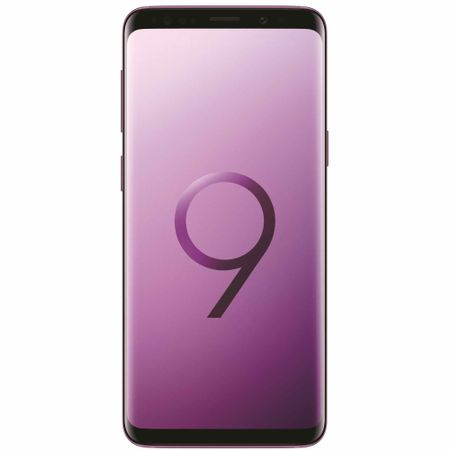

Pret:3500lei

Descriere:
Samsung Galaxy S9 Descopera Galaxy S9 si S9+ si camera revolutionara care se adapteaza la fel ca ochiul uman. Diafragma duala
Capteaza imagini uimitoare in lumina de zi naturala si lumina foarte slaba.
Obiectivul nostru inovator cu diafragma duala se adapteaza la fel ca ochiul uman.Este capabil sa se adapteze automat, cu usurinta, la diferite conditii de iluminare, facand fotografiile sa arate excelent, indiferent daca este lumina sau intuneric, zi sau noapte.
Fotografiaza fara sa te gandesti de doua ori - la orice ora din zi. Cu doua moduri f-stop, diafragma dubla inovatoare se adapteaza in mod automat la lumina puternica si lumina super scazuta, ca si ochiul uman. Si poti sa iti exersezi latura artistica incercand diferite aperturi pentru a crea anumite ambiante. Mod apertura F1.5
Daca este intuneric, obiectivul se deschide la modul F1.5 pentru a permite intrarea luminii si a obtine o fotografie luminoasa si clara Mod apertura F2.4
Daca este zi, obiectivul trece la modul F2.4 pentru a obtine o fotografie clara. Fotografii in conditii de luminozitate scazuta
Comentarii: